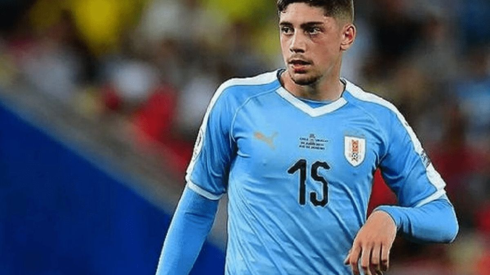
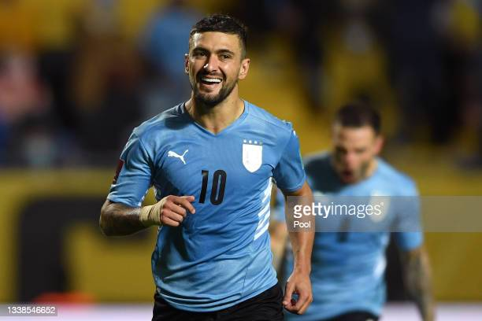
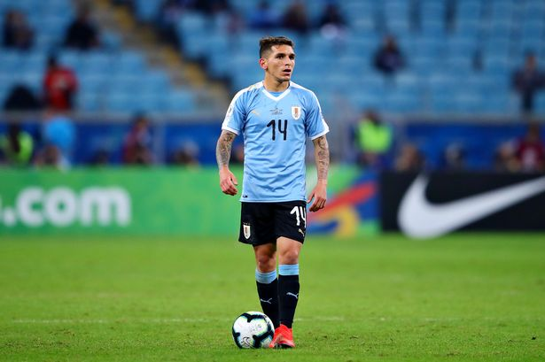
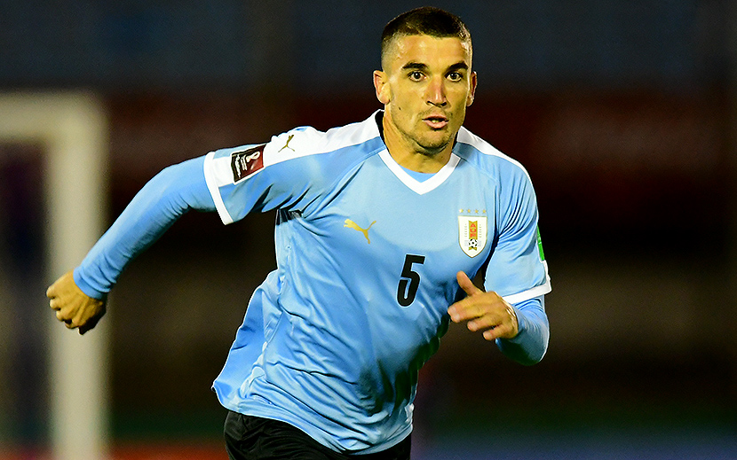

jogadores do uruguai
Luis Alberto Suárez
O atacante Luis Suárez, que tem contrato com o Nacional-URU até 31 de dezembro deste ano e deixará o clube, já definiu onde irá jogar após a Copa do Mundo do atar. De acordo com a rádio espanhola RAC 1 tem tudo encaminhado para defender o Los Angeles Galaxy em 2023. No time americano ele será companheiro de time do atacante Chicarito Hernández, ex-Manchester United, e Riqui Puig, ex-Barcelona.

Darwin Núñez
Darwin Gabriel Núñez Ribeiro (Artigas, 24 de junho de 1999), mais conhecido como Darwin Núñez, é um futebolista uruguaio que atua como centroavante. Atualmente, joga no Liverpool. Natural de Artigas, no Uruguai, Darwin começou a carreira nas categorias de base do Peñarol aos 13 anos.
Edinson Cavani
Edinson Roberto Cavani Gómez (Salto, 14 de fevereiro de 1987) é um futebolista uruguaio que atua como centroavante. Atualmente joga no Valencia. Revelado pelo Danubio, Cavani chegou em 2007 no futebol italiano.
Fernando Muslera
Néstor Fernando Muslera Micol (Buenos Aires, Argentina, 16 de junho de 1986) é um futebolista uruguaio nascido na Argentina que atua como goleiro. Atualmente, joga pelo Galatasaray. Foi o goleiro titular da Seleção Uruguaia que disputou a Copa do Mundo de 2010.
Federico Valverde
Federico Santiago Valverde Dipetta mais conhecido como Fede Valverde ou simplesmente Valverde (Montevidéu, 22 de julho de 1998) é um futebolista uruguaio que atua como meio-campista. Atualmente joga no .
Giorgian De Arrascaeta
Giorgian Daniel De Arrascaeta Benedetti (Nuevo Berlín, 1 de junho de 1994), mais conhecido como De Arrascaeta ou somente Arrascaeta, é um futebolista uruguaio que atua como meio-campista. Atualmente, joga no Flamengo e pela Seleção Uruguaia.
Diego Godín
Diego Roberto Godín Leal (Rosario, 16 de fevereiro de 1986) é um futebolista uruguaio que atua como zagueiro. Atualmente, joga pelo e é capitão da Seleção Uruguaia. Com passagens prévias por , e , Godín viveu seu auge pelo , onde atuou por nove temporadas e conquistou oito títulos.
Ronald Araújo
Ronald Federico Araújo da Silva (Rivera, 7 de março de 1999) é um futebolista uruguaio que atua como zagueiro. Atualmente joga pelo . Nascido em Rivera, Araújo se juntou as categorias de base do Rentistas, vindo do time de sua cidade Huracán de Rivera.

Rodrigo Bentancur
Rodrigo Bentancur Colmán (Nueva Helvecia, 25 de junho de 1997) é um futebolista uruguaio que joga como meio-campista. Atualmente joga no Tottenham. - Boca Juniors - Campeonato Argentino: 2015, 2016–17
Lucas Torreira
Lucas Sebastián Torreira Di Pascua (Fray Bentos, 11 de fevereiro de 1996) é um futebolista profissional uruguaio que atua como centrocampista. Atualmente joga no Galatasaray. Lucas Torreira começou a carreira no .
Martín Cáceres
José Martín Cáceres Silva (Montevidéu, 7 de abril de 1987) é um futebolista uruguaio que atua como zagueiro ou lateral-direito. Atualmente joga no Los Angeles Galaxy, dos Estados Unidos. Iniciou a carreira no Defensor Sporting, do Uruguai.
Agustín Álvarez
Agustín Álvarez Martínez é um futebolista profissional uruguaio que joga como atacante pelo Sassuolo e pela seleção do Uruguai.
Matías Viña
Matías Nicolás Viña Susperreguy é um futebolista uruguaio que joga como lateral esquerdo. Atualmente, joga pela Roma.
Cristhian Stuani
Cristhian Ricardo Stuani Curbelo é um futebolista uruguaio que atua como centroavante. Atualmente joga no Girona. Construiu boa parte de sua carreira no futebol espanhol, onde chegou em 2008 jogando emprestado ao Albacete.
Gabriel Neves
Gabriel Neves Perdomo mais conhecido como Gabriel Neves, Gabi Neves, Gabriel ou apenas Gabi, é um futebolista uruguaio que atua como volante. Atualmente joga pelo São Paulo, emprestado pelo Nacional.
Gastón Pereiro
Gastón Rodrigo Pereiro López é um futebolista uruguaio que atua como meia. Atualmente, joga pelo Cagliari.
Mauro Arambarri
Mauro Wilney Arambarri Rosa, conhecido também por Mauro Arambarri é um futebolista uruguaio que atua como meia. Atualmente defende o Getafe.
Manuel Ugarte
Manuel Ugarte Ribeiro, mais conhecido apenas como Manuel Ugarte é um futebolista uruguaio que atua como volante. Atualmente joga pelo Sporting.